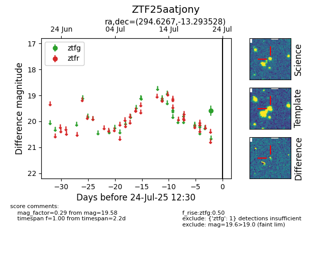

Target ZTF25aatjony at 2025-07-24 12:30, see:
FINK: fink-portal.org/ZTF25aatjony
Lasair: lasair-ztf.lsst.ac.uk/objects/ZTF25aatjony
ALeRCE: alerce.online/object/ZTF25aatjony
alt names
ZTF25aatjony (ztf,fink)
coordinates:
equatorial (ra, dec) = (294.6267,-13.29353)
galactic (l, b) = (26.1002,-16.34888)
photometry
last ztfg=19.58
1 ztfg detections
